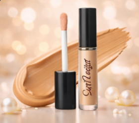
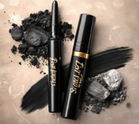
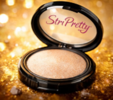
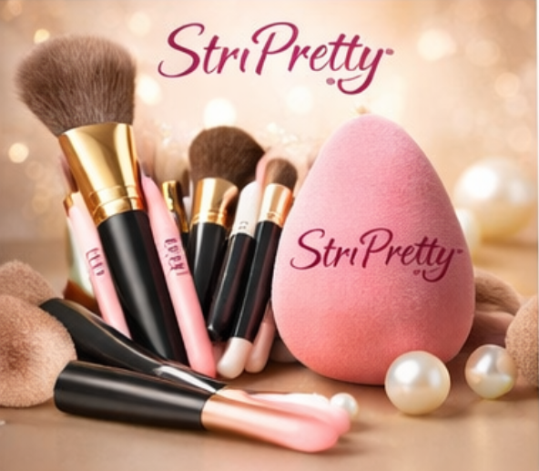
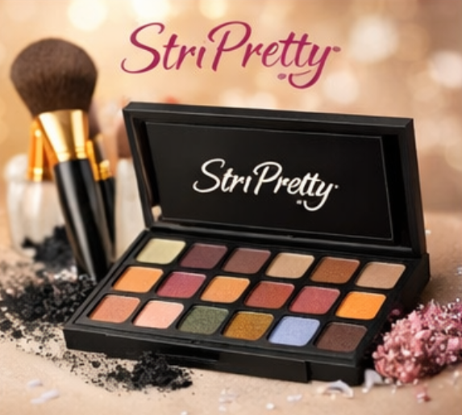
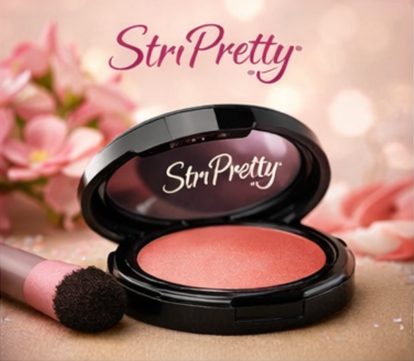
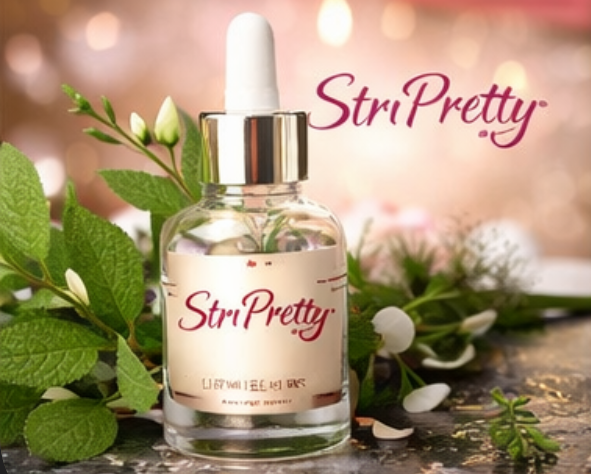
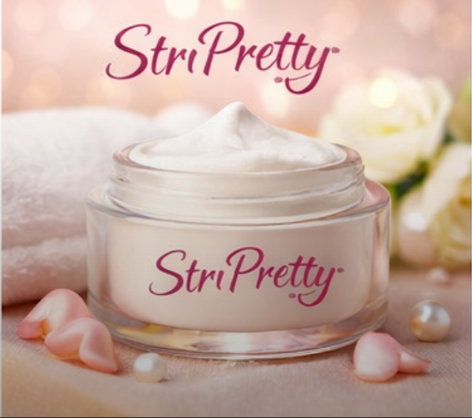
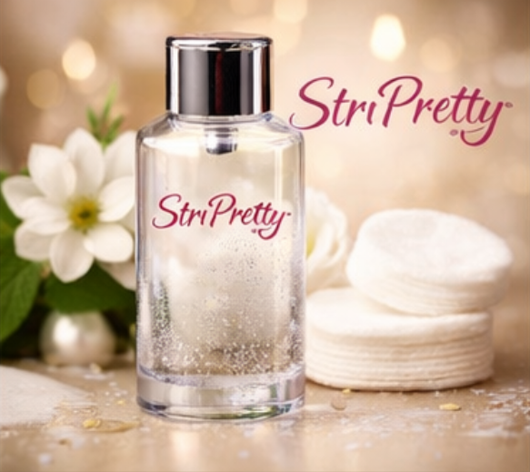
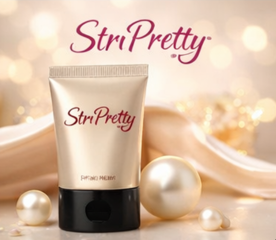

ConcealerFeatures
StriPretty Concealer is specially designed to hide dark circles, blemishes, acne marks, and uneven skin tone while giving a natural and flawless finish. Its lightweight and creamy texture blends smoothly into the skin without creasing or feeling heavy. The concealer provides long-lasting coverage that stays fresh throughout the day, making it suitable for both daily wear and special occasions. Enriched with skin-friendly ingredients, it helps keep the skin hydrated and comfortable even during extended use. This concealer works well on all skin types and tones and can be applied easily using fingers, brushes, or a beauty blender. StriPretty Concealer enhances confidence by giving the skin a smooth, clear, and radiant appearance. |
Customer Reviews
|
Kajal / EyelinerFeatures
StriPretty Kajal adds bold definition and depth to the eyes with its rich and intense black pigment. The smooth formula glides effortlessly along the eyelids without pulling or irritating the delicate eye area. It is designed to be smudge-proof and water-resistant, ensuring long-lasting wear throughout the day. This kajal is suitable for sensitive eyes and can be used for both subtle everyday looks and dramatic eye makeup styles. Whether applied as a thin liner or a bold stroke, it enhances the beauty of the eyes while maintaining comfort. StriPretty Kajal is a must-have product for expressive and confident eye makeup. |
Customer Reviews
|
HighlighterFeatures
StriPretty Highlighter gives the skin a beautiful radiant glow that enhances facial features naturally. Its finely milled texture blends easily into the skin, creating a soft and luminous finish without appearing glittery or heavy. The buildable formula allows users to achieve both subtle daytime glow and bold festive shine. Lightweight and long-lasting, the highlighter stays fresh throughout the day and complements all skin tones. It can be applied to cheekbones, brow bones, nose bridge, and cupid’s bow for a glowing look. StriPretty Highlighter adds brightness and elegance, making makeup look fresh, polished, and radiant. |
Customer Reviews
|
FoundationFeatures
StriPretty Foundation provides smooth and even coverage while maintaining a natural and comfortable feel on the skin. Its lightweight formula blends effortlessly, covering blemishes and uneven skin tone without clogging pores. The foundation offers buildable coverage, allowing users to customize their look from light to full coverage. Enriched with hydrating ingredients, it keeps the skin moisturized and fresh throughout the day. Suitable for all skin types, it helps create a flawless base for makeup while enhancing the skin’s natural beauty. Ideal for daily wear and special occasions, StriPretty Foundation delivers a radiant, smooth, and confident complexion. |
Customer Reviews
|
Beauty Blender & BrushesFeatures
StriPretty Beauty Blender and Brush Set is designed to ensure smooth and professional makeup application. The soft bristles and sponge blend makeup evenly without absorbing excess product, giving a flawless finish. Suitable for liquid, cream, and powder products, the tools provide precision and comfort during application. The durable design ensures long-lasting use, while the easy-to-clean materials maintain hygiene. Perfect for beginners and professionals alike, this set helps achieve a polished makeup look effortlessly. StriPretty Beauty Tools enhance makeup performance and make daily application simple, quick, and effective. |
Customer Reviews
|
Eyeshadow PaletteFeatures
StriPretty Eyeshadow Palette features a beautiful range of shades suitable for every occasion. The highly pigmented colors provide rich payoff with minimal effort, while the smooth texture allows easy blending and layering. The palette includes both matte and shimmer shades, enabling users to create soft daytime looks and bold evening styles. Long-lasting and lightweight, the eyeshadows stay vibrant throughout the day without creasing. Suitable for all skill levels, this palette encourages creativity and experimentation. StriPretty Eyeshadow Palette enhances eye makeup and adds depth, color, and elegance to every look. |
Customer Reviews
|
BlushFeatures
StriPretty Blush adds a natural and healthy flush to the cheeks, enhancing facial features beautifully. Its soft and lightweight texture blends seamlessly into the skin, giving a smooth and radiant finish. The blush provides long-lasting color that stays fresh throughout the day without fading. Suitable for all skin tones, it can be layered to achieve both subtle and bold looks. Ideal for daily makeup routines, StriPretty Blush enhances complexion and adds warmth and freshness to the face, creating a youthful and confident appearance. |
Customer Reviews
|
Lipsticks (15 Shades)Features
StriPretty Lipsticks offer a collection of 15 vibrant and versatile shades suitable for every mood and occasion. The creamy formula glides smoothly on the lips, delivering rich color payoff with a comfortable feel. Enriched with moisturizing ingredients, these lipsticks prevent dryness and keep lips soft and nourished. The long-lasting formula ensures minimal touch-ups throughout the day. From natural nude shades to bold reds and pinks, the collection allows users to express their style confidently. StriPretty Lipsticks enhance smiles with elegance, comfort, and long-lasting beauty. |
Customer Reviews
|
Face SerumFeatures
StriPretty Face Serum deeply nourishes and revitalizes the skin, promoting a healthy and radiant appearance. Its lightweight and fast-absorbing formula penetrates the skin quickly without leaving a greasy residue. Regular use helps improve skin texture, hydration, and natural glow. Suitable for all skin types, the serum works well as part of a daily skincare routine. It prepares the skin for makeup application while enhancing overall skin health. StriPretty Face Serum supports smooth, fresh, and glowing skin with consistent use. |
Customer Reviews
|
Face CreamFeatures
StriPretty Face Cream provides deep hydration and nourishment to keep the skin soft and smooth. Its non-greasy texture absorbs easily, making it suitable for daily use. The cream helps maintain moisture balance and protects the skin from dryness. Designed for all skin types, it can be used both morning and night. Regular application improves skin texture and comfort, leaving the face refreshed and healthy. StriPretty Face Cream supports glowing and well-nourished skin every day. |
Customer Reviews
|
Makeup RemoverFeatures
StriPretty Makeup Remover gently and effectively removes makeup without irritating the skin. Its mild formula cleanses thoroughly while maintaining the skin’s natural moisture balance. Suitable for all skin types, it removes even stubborn makeup without harsh rubbing. The remover leaves the skin clean, soft, and refreshed after use. Ideal for daily skincare routines, it helps prevent clogged pores and supports healthy skin. StriPretty Makeup Remover ensures safe and comfortable makeup removal. |
Customer Reviews
|
PrimerFeatures
StriPretty Primer creates a smooth and even base for makeup application. It helps minimize the appearance of pores and fine lines, allowing makeup to last longer. The lightweight formula spreads easily and feels comfortable on the skin. Suitable for all skin types, the primer enhances makeup performance and finish. It prepares the skin effectively, ensuring a flawless and polished look throughout the day. StriPretty Primer is an essential step for long-lasting and professional-looking makeup. |
Customer Reviews
|
End of StriPretty Beauty Products